Case study · Group Project 1 · "A Family of Buttons"
Four-Part Harmony
How do you show four different people and how they work together, using nothing but four buttons? Our answer: make each teammate a musician, and let their personalities decide whether they play in sync.
- Team
- Hardik Mehta, Shashwat Tank, Happy Prajapati, Jawad Naheen Shamim
Tutorial 2 · Group 5 - My role
- Sketching & ideation · Evaluation & write-up
- Methods
- Low-fi sketching, divergent/convergent ideation, criteria matrix, heuristic review
- Tools
- iPad sketching, HTML/CSS/JS, Canvas, Web Audio API, Figma colour resources, GitHub, Word
What I personally did
Sketching & ideation
I drew Sketch 1, the anime concept for my own button, and worked on the team's divergent and convergent sketching. That included helping move us from four separate profiles to one shared band.
Evaluation & write-up
I worked on the heuristic review of the working prototype, turned what we found into the issue → refinement → reason tables, and helped structure the report so each design change can be traced back to evidence.
Stage 1 · Diverge
Four people, four sketches, one shared problem
We started with quick low-fidelity iPad sketches, one interest-based idea per teammate. The goal at this stage was lots of ideas, not good-looking ones. Mine was an anime concept: tap to cycle through symbols that float around the character.
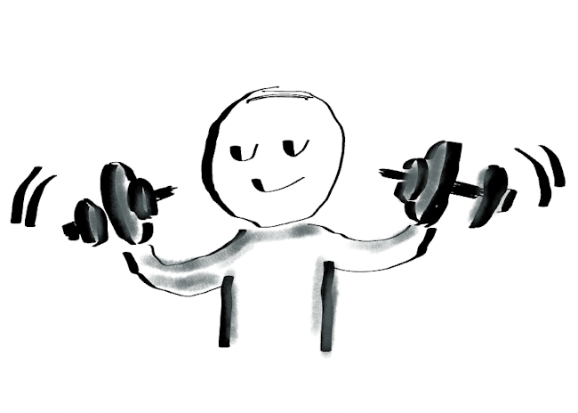
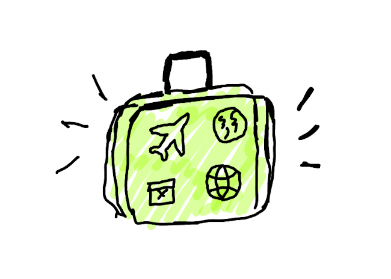
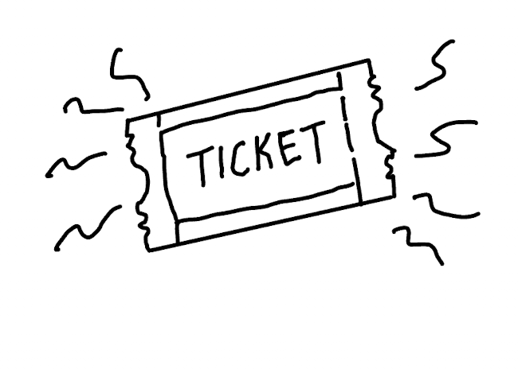
Each sketch was easy to recognize as its person, but every one of them was a profile, not a family. Nothing happened when two buttons were active together. Because we had four sketches side by side, this weakness was obvious. With only one, we would have missed it.
So the question changed from "What represents each person?" to "What happens when all four buttons live in the same system?"
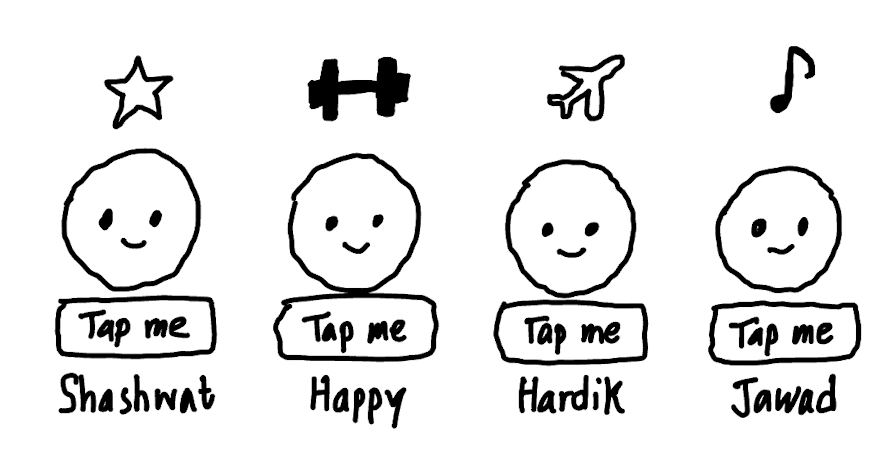
Stage 2 · Converge
Choosing by criteria, not by taste
We scored four directions against criteria taken from the brief. A band was the only one strong on both individual identity and team dynamics.
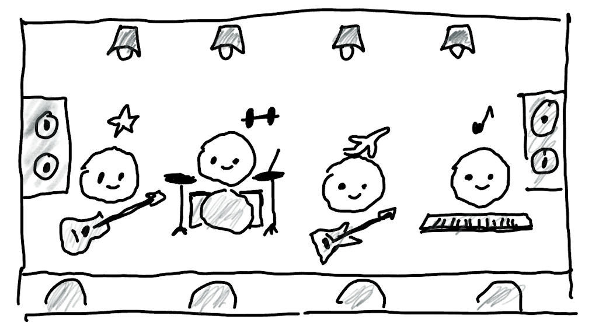
Turning personality into behaviour
We used hobbies to make each teammate recognizable and Big Five survey results to drive how they behave. That way they never become anonymous data points.
Stage 3 · Prototype
Making the relationships visible, then interactive
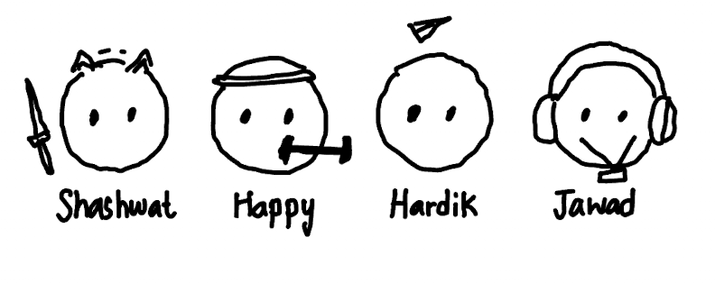
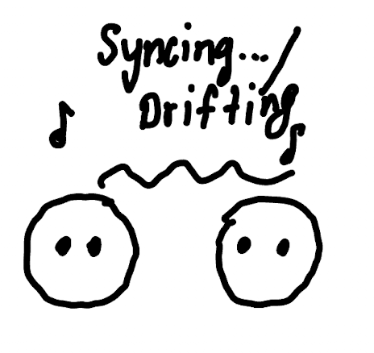
Iteration 1: synchronization. Four musicians playing side by side are still four separate profiles. Adding rhythmic sync (a coupled-oscillator model) meant a second button creates a relationship, not just another sound. More similar pairs pull toward a shared beat more strongly.
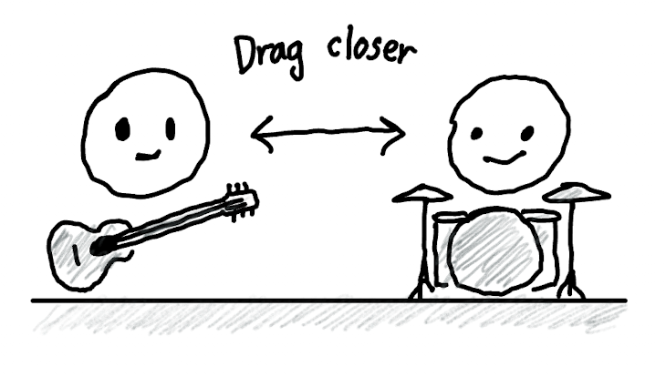
Iteration 2: dragging. Users were still only watching. Now distance controls how strongly two people interact right now, while similarity stays fixed as who they are. That gives users an experiment to run: can a pair that won't sync on its own get there if you move them closer?
Stage 4 · Evaluate my focus
The risk wasn't "does it run?" It was "does a first-timer get it?"
I worked on the heuristic review of the working prototype. I chose five of Nielsen's heuristics that fit our main risk: whether a new user could understand what waking, drifting, in sync and dragging mean.
- Visibility of system status
- User control & freedom
- Consistency
- Recognition over recall
- Aesthetic & minimalist design
The side panel got heavy with text as we added more personality info.
→ RefinementMoved details into a collapsible section; kept the active state short.
Minimalist designDragging felt disconnected while users waited for sync to happen.
→ RefinementImmediate visual and status feedback during the drag.
System statusPair relationships were hard to hear from sound alone.
→ RefinementAdded relationship lines and state labels on top of the audio.
RecognitionUtility controls competed with the four teammate buttons.
→ RefinementReset and Sound made visually secondary.
Consistency / focusIn the write-up, I set up every change as issue → refinement → why it mattered, so a reader can trace each design decision back to something we observed.
Stage 5 · Refine
Before & after
Use the toggle to compare the earlier build with the final one.
Colour & visual identity
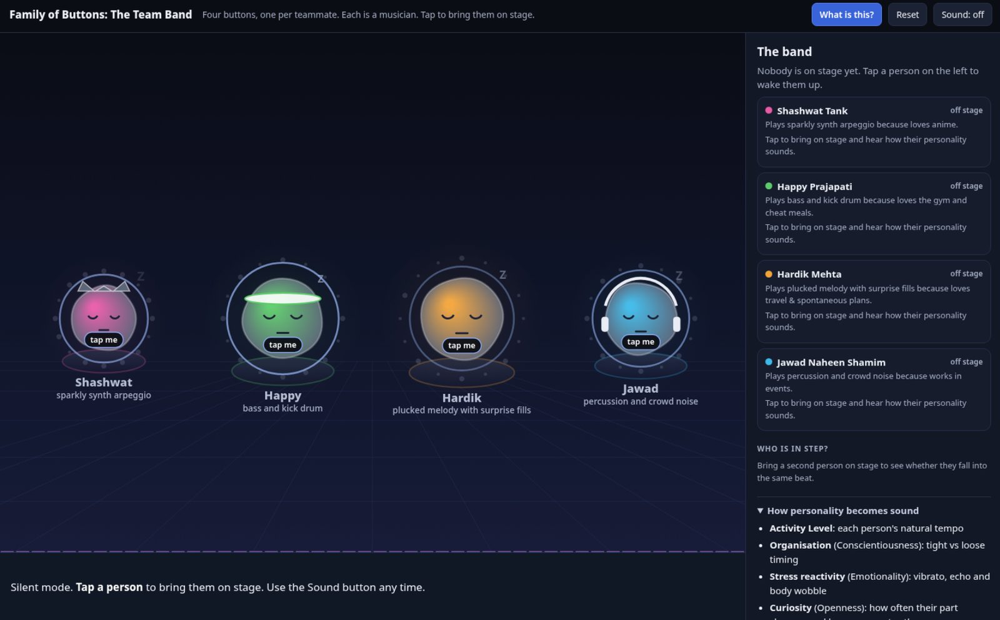
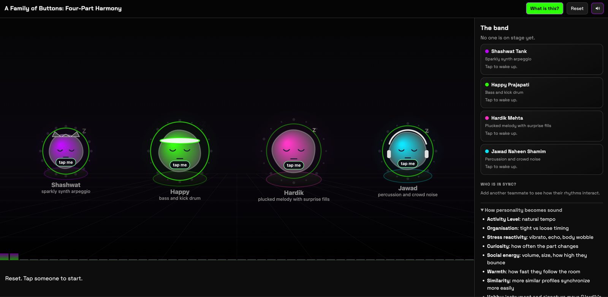
Muted dark blue → a near-black "Neon Noir" stage. Colour now carries status too: green = In sync purple = Drifting grey = Waiting.
Information hierarchy & pair feedback
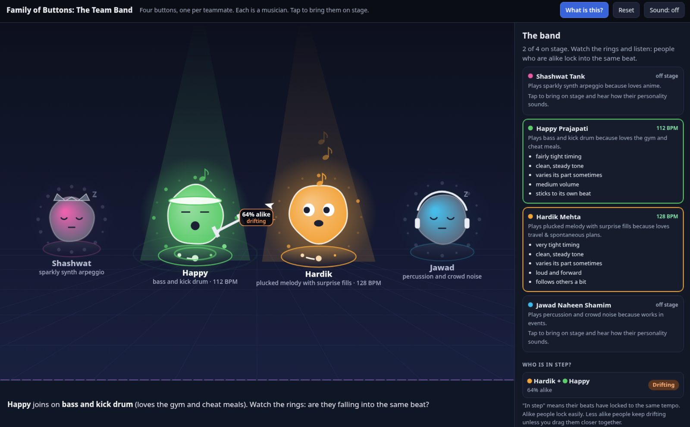
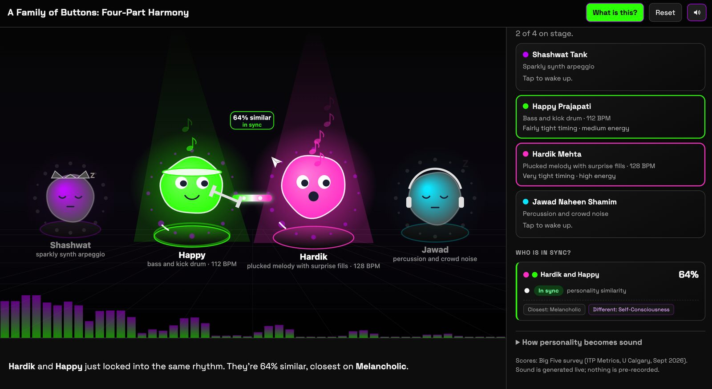
A bare "64% alike" didn't explain anything. Now it reads personality similarity and is tagged with the facet where the pair is closest and the one where they differ most.
Wording precision
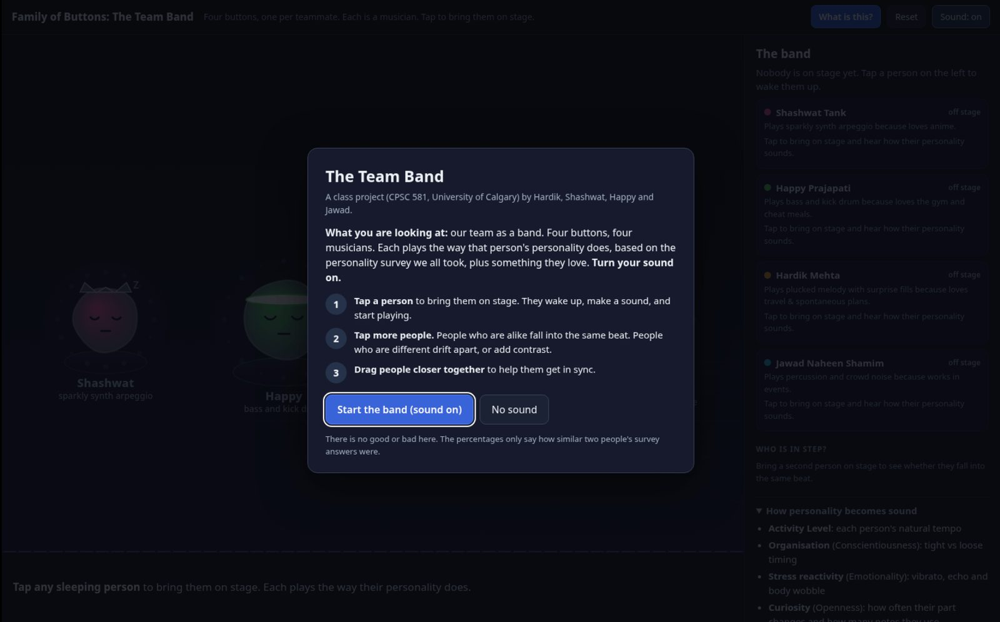
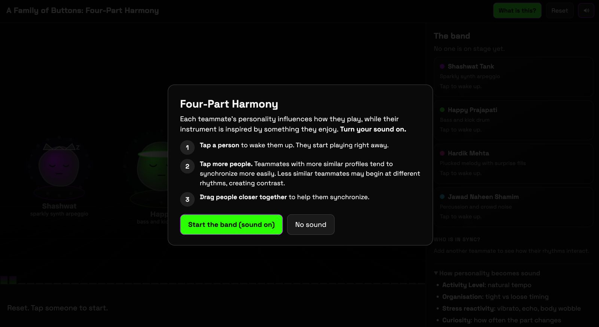
The final app
Reflection: what I'm taking forward
What worked
Putting all four sketches side by side found our biggest problem before we wrote any code. Choosing by criteria also kept the band decision from turning into a matter of personal taste.
What I'd change
Our evaluation was mostly team walkthroughs plus a heuristic review. Next time I want a few first-time users doing think-aloud sessions. Our known issue, the sync state flickering for the first few seconds, is exactly the kind of thing real users would have caught sooner.
Open issues I'd own
Labels overlap when characters are dragged very close, and the app hasn't had a full accessibility review. Colour is backed by text labels, but keyboard dragging is still missing.